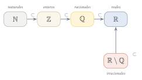

Capítulo 1
Números reales
UNAMIPNCENEVAL
Los números reales constituyen la base de gran parte de las matemáticas que estudiarás en el bachillerato y la universidad. Antes de trabajar con expresiones algebraicas, funciones o cálculo, es necesario comprender qué son, cómo se clasifican y cuáles son sus principales propiedades. En este capítulo estudiarás los conjuntos numéricos, las propiedades algebraicas de los números reales y las reglas fundamentales de orden.
1.1 Clasificación de los números#

Cada recuadro representa un conjunto numérico. La flecha acompañada del símbolo \(\subset\) indica que un conjunto está contenido en otro.
Los números reales, representados por \(\R\), son todos los números que pueden ubicarse en la recta numérica. El conjunto de los números reales está formado por los números racionales y los números irracionales.
La siguiente tabla resume los principales conjuntos numéricos:
| Símbolo | Conjunto | Ejemplos |
|---|---|---|
| \(\N\) | Naturales | \(1, 2, 3, 4, \ldots\) |
| \(\Z\) | Enteros | \(\ldots, -2, -1, 0, 1, 2, \ldots\) |
| \(\Q\) | Racionales | \(\dfrac{3}{4},\ -2,\ 0.5,\ \sqrt{4}\) |
| \(\R \setminus \Q\) | Irracionales | \(\pi,\ \sqrt{2},\ e\) |
| \(\R\) | Reales | Todos los anteriores |
En esta guía se utiliza la convención \[\N=\{1,2,3,\ldots\},\] por lo que el cero no se considera un número natural.
Además, se cumple la cadena de inclusiones \[\N \subset \Z \subset \Q \subset \R, \qquad \R \setminus \Q \subset \R.\] Esto significa que todo número natural es entero, todo entero es racional y todo racional es real. Las inclusiones no funcionan necesariamente en el sentido contrario.
La presencia de un radical no implica que un número sea irracional. Por ejemplo, \[\sqrt{4}=2,\] por lo que \(\sqrt{4}\) es un número natural, entero, racional y real. En cambio, \(\sqrt{2}\) es irracional porque su representación decimal es infinita y no periódica.
1.2 Propiedades de los números reales#
Para cualesquiera \(a,b,c\in\R\), se cumplen las siguientes propiedades algebraicas:
- Cerradura: \[a+b\in\R \qquad\text{y}\qquad ab\in\R.\]
- Conmutatividad: \[a+b=b+a \qquad\text{y}\qquad ab=ba.\]
- Asociatividad: \[(a+b)+c=a+(b+c)\] y \[(ab)c=a(bc).\]
- Distributividad: \[a(b+c)=ab+ac.\]
- Elementos neutros: \[a+0=a \qquad\text{y}\qquad a\cdot 1=a.\]
- Inversos: \[a+(-a)=0\] y, si \(a\neq 0\), \[a\cdot\frac{1}{a}=1.\]
1.3 Propiedades de orden#
Los números reales pueden compararse y ordenarse sobre la recta numérica. Las siguientes propiedades permiten trabajar con igualdades y desigualdades.
Para cualesquiera \(a,b\in\R\), se cumple exactamente una de las siguientes condiciones: \[a<b, \qquad a=b, \qquad a>b.\]
Si \(a<b\) y \(b<c\), entonces \[a<c.\]
Sean \(a,b,c\in\R\).
- Si \(a<b\), entonces \[a+c<b+c.\]
- Si \(a<b\) y \(c>0\), entonces \[ac<bc.\]
- Si \(a<b\) y \(c<0\), entonces \[ac>bc.\] En este caso, el sentido de la desigualdad se invierte.
Al multiplicar o dividir ambos miembros de una desigualdad por un número negativo, el sentido de la desigualdad debe invertirse. Por ejemplo: \[-2x<6 \quad\Longrightarrow\quad x>-3.\] Olvidar este cambio de sentido es un error frecuente al resolver desigualdades.
1.4 Ejemplos resueltos#
Clasifica los siguientes números en todos los conjuntos numéricos a los que pertenecen: \[-3, \quad \frac{5}{2}, \quad \sqrt{9}, \quad \sqrt{3}, \quad 0, \quad 2.5.\]
Ver solución
- \(-3\) es entero, racional y real.
- \(\dfrac{5}{2}\) es racional y real.
- \(\sqrt{9}=3\) es natural, entero, racional y real.
- \(\sqrt{3}\) es irracional y real.
- \(0\) es entero, racional y real. De acuerdo con la convención utilizada en esta guía, no es natural.
- \(2.5=\dfrac{5}{2}\) es racional y real.
Determina si el número \[\sqrt{25}+\sqrt{2}\] es racional o irracional.
Ver solución
Como \[\sqrt{25}=5,\] la expresión puede escribirse como \[5+\sqrt{2}.\] El número \(5\) es racional y \(\sqrt{2}\) es irracional. La suma de un número racional y un número irracional es irracional. Por lo tanto, \[\sqrt{25}+\sqrt{2}=5+\sqrt{2}\] es irracional.
Resuelve la desigualdad \[-3x+4>10.\]
Ver solución
En el penúltimo paso se invirtió el sentido de la desigualdad porque ambos miembros se dividieron entre \(-3\).
El conjunto solución es \[(-\infty,-2).\]
Ubica en la recta numérica los números \[-2, \quad 0, \quad \frac{3}{4} \quad\text{y}\quad \sqrt{2}.\]
Ver solución
Como \[\frac{3}{4}=0.75 \qquad\text{y}\qquad \sqrt{2}\approx 1.41,\] los números se ordenan de la siguiente manera: \[-2<0<\frac{3}{4}<\sqrt{2}.\]
Su ubicación aproximada en la recta numérica es:
1.5 Ejercicios propuestos#
Clasifica cada número en todos los conjuntos numéricos a los que pertenece: \[3, \quad -\frac{1}{2}, \quad \sqrt{2}, \quad \pi, \quad \sqrt{4}.\]
Ver solución
- \(3 \in \N, \Z, \Q, \R\). (Natural, entero, racional, real)
- \(-\frac{1}{2} \in \Q, \R\). (Racional, real)
- \(\sqrt{2} \in \R \setminus \Q, \R\). (Irracional, real)
- \(\pi \in \R \setminus \Q, \R\). (Irracional, real)
- \(\sqrt{4} = 2 \in \N, \Z, \Q, \R\). (Natural, entero, racional, real)
Determina si el siguiente número es racional o irracional: \[\sqrt{16}+\sqrt{5}.\] Justifica tu respuesta.
Ver solución
\(\sqrt{16}+\sqrt{5} = 4+\sqrt{5}\). Como 4 es racional y \(\sqrt{5}\) es irracional, su suma es un número irracional.
Resuelve la desigualdad \[2x-5\leq 7\] y expresa el conjunto solución en notación de intervalo.
Ver solución
\(2x-5 \leq 7 \implies 2x \leq 12 \implies x \leq 6\).
En notación de intervalo: \((-\infty, 6]\).
Resuelve la desigualdad \[-4x>12\] y expresa el conjunto solución en notación de intervalo.
Ver solución
\(-4x > 12 \implies x < \frac{12}{-4} \implies x < -3\).
Recuerda que al dividir entre un número negativo, la desigualdad se invierte.
En notación de intervalo: \((-\infty, -3)\).
Ordena de menor a mayor los siguientes números: \[-3, \quad \frac{1}{2}, \quad \sqrt{5}, \quad 0, \quad -1.5.\]
Ver solución
Convertimos a decimales para aproximar: \(\frac{1}{2} = 0.5\) y \(\sqrt{5} \approx 2.236\).
Por lo tanto, ordenados de menor a mayor: \[-3 < -1.5 < 0 < \frac{1}{2} < \sqrt{5}\]